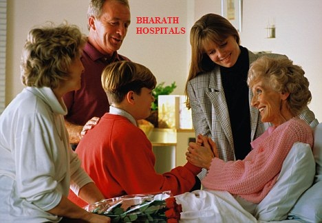

BHARATH HOSPITALS
Home
About
Gallery
Facilities
Login
Register
Contact Us
Kannada
INPATIENT
FACILITIES
SURGICAL

Hospitals can be scary places, so we encourage patients to be accompanied by someone who can sit with them until they go through to theatre.
While the patient is in theatre, the visitor is able to relax in the waiting lounge with TV, magazines and tea/coffee facilities available. For inpatients, the visitor can wait in the patient’s room in the ward, or in the ward patient lounge.